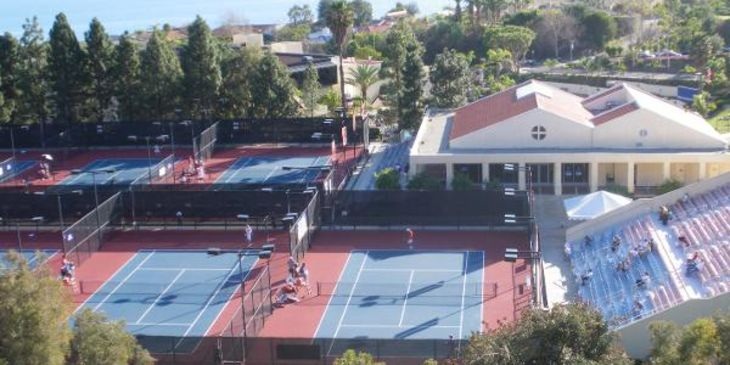
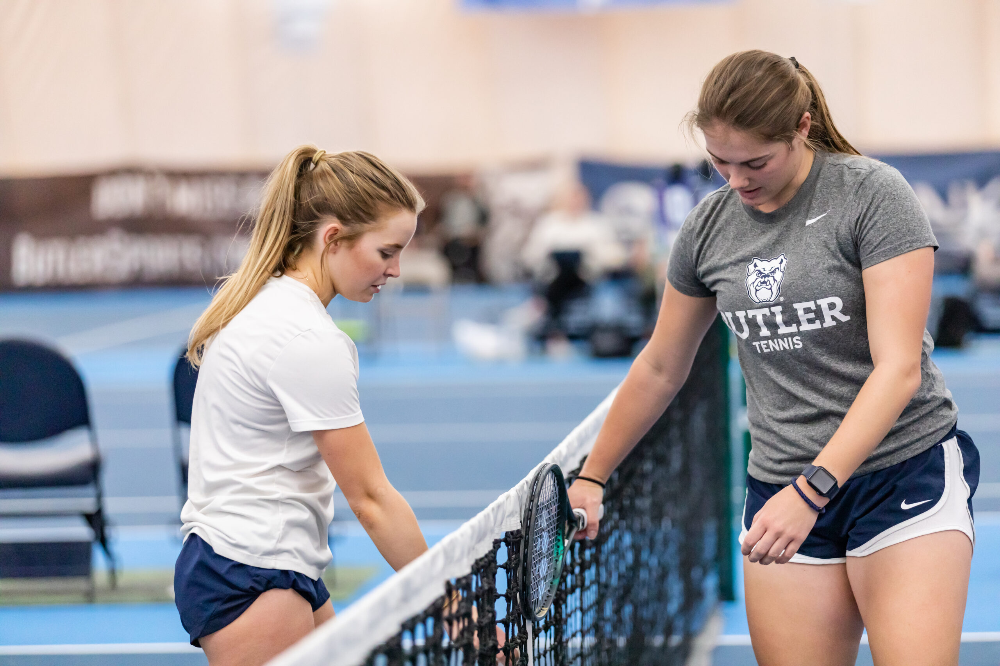

Our History
One of the longest played collegiate sports, tennis has been played in US universities since 1883, twenty-three years before the NCAA itself was founded. At first, it was seen almost exclusively among the elite and upper classes, with colleges such as Harvard presenting the first ever champions of the sport.

Our Mission
Tennis Academy of the South strives to develop aspiring juniors to become the next generation of collegiate and world class tennis players. Our expert training addresses the physical, mental and emotional aspects of tennis. From the high performance player to the recreational player, we leverage our proven approach to tennis success across all ages and levels of play.
FAMOUS COLLEGE TENNIS PLAYERS
John McEnroe: Stanford University in California.
Jimmy Connors: University of California at Los Angeles.
John Isner: University of Georgia.
Danielle Collins: University of Virginia
Cameron Norrie: Horned Frogs university team
